Thread lightly.
Spin up a thread. Keep what matters. Bobbin forgets the rest.

Not every thread needs a history.
Bobbin keeps quick agent work close, then quietly makes room for whatever comes next.
-
Start in one click
Open the menu bar, choose a folder, and ask. Your main workspace stays where it was.
-
Let the small stuff fade
Unsaved threads grow quieter with age and are deleted after seven days.
-
Keep what matters
Save a useful thread and it moves somewhere calm, ready when you need it again.
Tune every thread to the task.
Choose the model, reasoning effort, and trust for each thread. Give new threads the system prompt they need.
